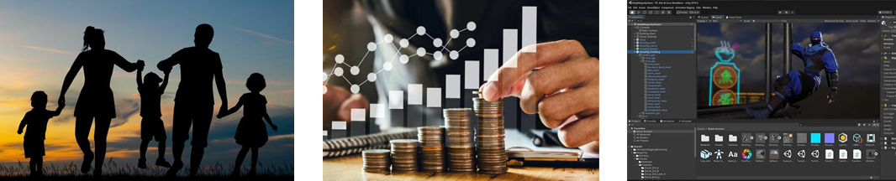

En 10 Años estaría teniendo la edad de 28 años, una edad en la que yo ya estaría esperando ir avanzado en mi sueño, que consiste en crear una desarrolladora de videojuegos independiente, probablemente ya habré creado mi primer videojuego.
A nivel personal, me veo como alguien responsable, se que esto a veces flaquea pero estoy trabajando porque deje de ser así, también como alguien que se ha estado empeñando en lograr lo que quiere.
A nivel familiar, creo que a esa edad lo más probable es que siga viviendo con mis padres pero aún así, planeando la formación de mi propia familia, y nunca olvidandome de ellos, ya que estos han sido mi mayor apoyo en mi vida.
Como ya mencioné, espero haber creado mi primer videojuego para entonces, o ¿quien sabe? Tal vez ya tenga mi propia empresa, en el caso que no sea así, de igual manera me miró como alguien que tiene una situación económica muy estable, trabajando en alguna desarrolladora.
Tampoco podemos dejar de lado las amistades, seguiría siendo bastante cercano a estas, pues al igual que mi familia también me han dado apoyo en todo lo que me propongo.
